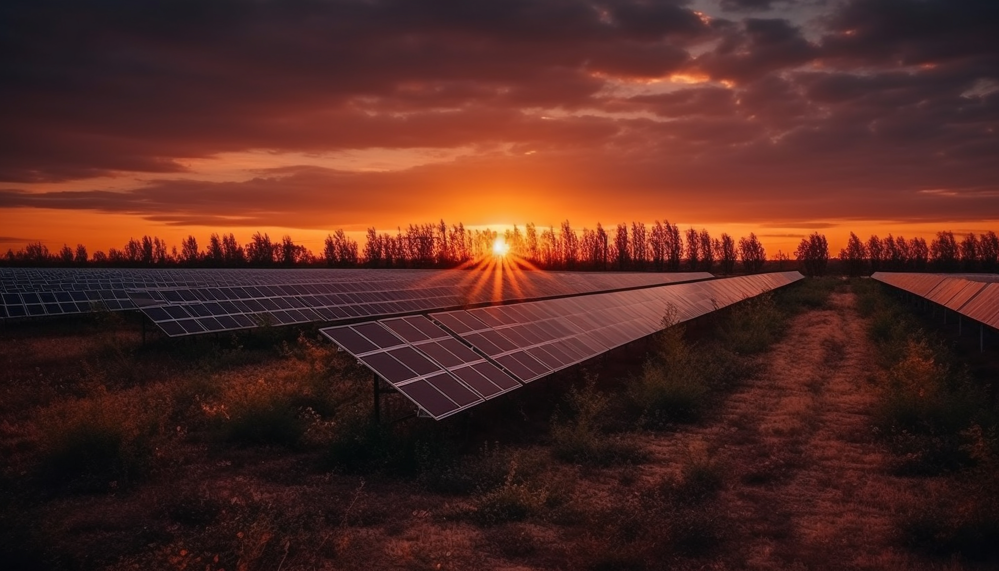
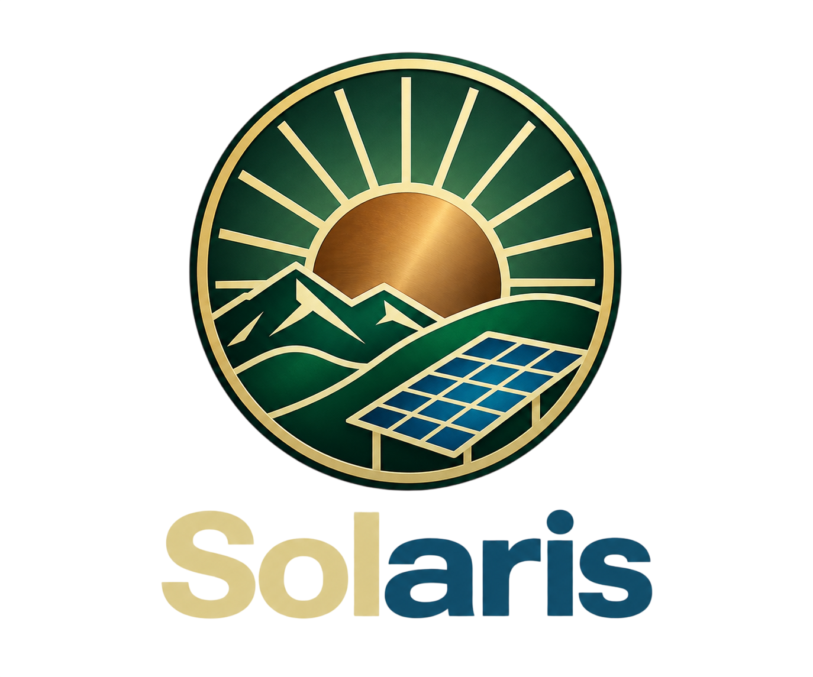
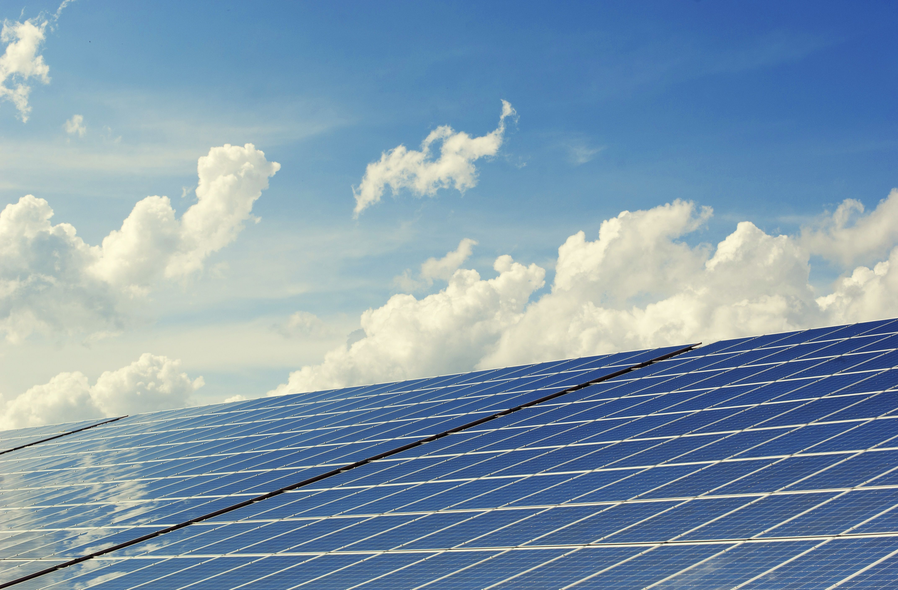
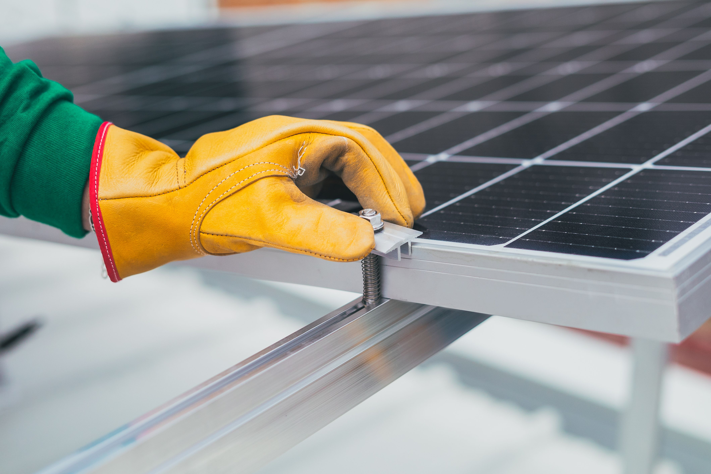

Quem somos
Somos uma empresa voltada ao desenvolvimento de soluções digitais relacionadas à energia solar, unindo informação, tecnologia e experiências interativas.


ENERGIA • TECNOLOGIA • FUTURO
A Solaris reúne informação, tecnologia e experiências digitais para apresentar a energia solar de forma clara, visual e interativa.
SOBRE A SOLARIS
A Solaris desenvolve soluções digitais que conectam informação, tecnologia e experiências interativas.
Somos uma empresa voltada ao desenvolvimento de soluções digitais relacionadas à energia solar, unindo informação, tecnologia e experiências interativas.
Criamos experiências digitais para apresentar o tema da energia solar, suas tecnologias, aplicações e possibilidades de forma acessível.
Aproximar pessoas do conhecimento sobre energia solar por meio de soluções digitais claras, informativas e interativas.
Desenvolver experiências digitais que tornem temas de energia, tecnologia e sustentabilidade mais fáceis de compreender e explorar.
NOSSOS PROJETOS
Plataforma informativa que reúne conteúdos sobre energia solar, tecnologia, sustentabilidade, aplicações e futuro.
Experiência digital complementar para explorar o projeto e suas informações de forma prática.
Experiência interativa criada para aproximar o público do tema por meio da exploração e da participação.
Conheça o projeto e converse com a Solaris.
Fale com a SolarisUMA VISÃO GERAL
Cinco etapas para entender a energia solar de onde tudo começa até as tecnologias, aplicações e profissionais que fazem parte dela.
01 — ENERGIA SOLAR

Energia solar é a energia proveniente da radiação emitida pelo Sol. Essa radiação chega à Terra principalmente na forma de luz e calor e pode ser aproveitada por diferentes tecnologias.
Luz solar → eletricidade.
Radiação solar → calor.
02 — COMO FUNCIONA
Nas células fotovoltaicas, a luz fornece energia ao material semicondutor. As cargas elétricas são separadas e conduzidas, permitindo a formação de corrente elétrica.
A célula é a unidade em que ocorre a conversão da energia da luz em energia elétrica. Muitas células são conectadas para formar um módulo fotovoltaico.
Os módulos produzem corrente contínua. O inversor converte essa eletricidade em corrente alternada, que pode ser utilizada no imóvel ou integrada ao sistema elétrico.
A geração varia ao longo do dia. Em sistemas conectados à rede, a eletricidade pode ser fornecida pela rede quando a geração solar não é suficiente. Em sistemas com armazenamento, baterias podem disponibilizar energia posteriormente.
03 — TECNOLOGIAS
Não. Existem diferentes materiais, arquiteturas de células e características de módulos.
| Tecnologia | Ideia principal | Situação |
|---|---|---|
| Monocristalino | Silício cristalino produzido a partir de uma estrutura de cristal único. | Consolidada |
| Policristalino | Silício formado por múltiplos cristais. | Consolidada |
| Filme fino | Materiais fotovoltaicos depositados em camadas finas. | Comercial / aplicações específicas |
| Bifacial | Captação de luz pela frente e pela parte traseira do módulo. | Comercial |
| HJT | Arquitetura de célula que combina diferentes camadas semicondutoras. | Comercial / expansão |
| TOPCon | Arquitetura avançada de células de silício. | Ampla presença industrial |
| Perovskitas | Materiais fotovoltaicos com potencial para novas arquiteturas e aplicações. | Pesquisa / desenvolvimento e comercialização em evolução |
04 — DESEMPENHO
Um sistema fotovoltaico não produz sempre a mesma quantidade de eletricidade. A geração varia ao longo do dia e depende das condições do local, do projeto e dos equipamentos.
Representa a capacidade elétrica de produção ou consumo em determinado instante.
Representa a quantidade de eletricidade produzida ou consumida ao longo de um período.
EXPERIÊNCIA INTERATIVA
Os resultados são uma simulação didática e não representam uma previsão de uma instalação real.
Sim. Os módulos sofrem degradação ao longo dos anos, reduzindo gradualmente sua capacidade de geração. A vida útil pode durar décadas, mas varia conforme tecnologia, qualidade, instalação e condições ambientais.
05 — SISTEMAS
Os módulos fotovoltaicos trabalham junto com outros equipamentos. A organização depende da relação com a rede elétrica e da necessidade de armazenamento.
SISTEMA 01
Conectado à rede elétrica.
A energia pode ser consumida no imóvel, enviada à rede quando houver excedente ou recebida da rede quando a geração solar não for suficiente.
☀️ Sol → Painéis → Inversor → 🏠 Consumo ↔ ⚡ Rede
SISTEMA 02
Não depende da conexão com a rede elétrica convencional.
Normalmente utiliza baterias para armazenar energia e pode ser útil em locais onde a conexão à rede é inexistente, difícil ou pouco viável.
☀️ Sol → Painéis → 🔋 Bateria → Inversor → 🏠 Consumo
SISTEMA 03
Pode combinar energia solar, rede elétrica e baterias.
É útil quando há interesse em armazenamento, backup ou maior controle sobre o fornecimento.
☀️ Solar → 🏠 Consumo ↔ 🔋 Bateria ↔ ⚡ Rede
COMPARAÇÃO
| Característica | On-Grid | Off-Grid | Híbrido |
|---|---|---|---|
| Conectado à rede | Sim | Não | Sim |
| Painéis solares | Sim | Sim | Sim |
| Baterias | Opcionais | Normalmente necessárias | Comuns |
| Pode operar isolado | Não no sistema convencional | Sim | Depende da arquitetura |
06 — SUSTENTABILIDADE
A energia solar é renovável, mas isso não significa ausência total de impactos. É necessário considerar todo o ciclo de vida.
VISÃO DO CICLO
A geração fotovoltaica não utiliza combustão para realizar a conversão da luz em eletricidade.
A fabricação depende de materiais como vidro, alumínio, silício e cobre. A extração e o processamento também fazem parte dos impactos do ciclo de vida.
O uso de água depende da etapa e da tecnologia. Grandes usinas também precisam de espaço, e o local e o projeto influenciam os impactos sobre o ambiente.
Um módulo pode ser reparado, reutilizado quando ainda é viável ou encaminhado para reciclagem, buscando recuperar materiais como vidro, alumínio, cobre e silício.
Combina geração fotovoltaica com atividades agrícolas no mesmo espaço, quando o projeto e as condições locais permitem essa integração.
Sistemas de armazenamento também precisam ser considerados na análise ambiental, desde a fabricação e os materiais até o uso, a reutilização e o fim de vida.

Sustentabilidade não significa ausência de impacto. Significa analisar os impactos, reduzi-los e buscar soluções para todo o ciclo de vida.
07 — APLICAÇÕES + BRASIL
Da geração próxima do consumo às grandes usinas, a energia fotovoltaica aparece em diferentes escalas e contextos.
🏠 Casas, 🏢 comércio e serviços, 🏫 escolas e hospitais.
🏭 Instalações industriais e ☀️ grandes usinas utilizam a mesma tecnologia em diferentes escalas.
🌾 Agricultura, bombeamento e eletrificação rural em regiões sem conexão convencional.
🌊 Superfícies de água, fachadas, estacionamentos e outras aplicações ampliam onde a tecnologia pode ser integrada.
APLICAÇÃO EM DESTAQUE
Combina geração fotovoltaica com atividades agrícolas no mesmo espaço, quando o projeto e as condições locais permitem essa integração.
ENERGIA SOLAR NO BRASIL
Os indicadores abaixo mostram a evolução recente da energia solar fotovoltaica no país.
DADOS HISTÓRICOS
Escolha o indicador para observar a mudança ao longo dos anos.
Carregando dados históricos...
Produção próxima do consumo, em unidades como:
Grandes instalações conectadas ao sistema elétrico.
MAPA
Os indicadores e o gráfico usam dados armazenados no Supabase. O ano mais recente e a fonte correspondente são exibidos junto aos resultados.
08 — FUTURO + PROFISSÕES
A próxima geração procura aumentar o desempenho, melhorar o armazenamento, integrar a energia solar às redes e ampliar suas aplicações.
O FUTURO
Novas arquiteturas de células procuram elevar o desempenho e ampliar as possibilidades da tecnologia fotovoltaica.
Baterias podem armazenar eletricidade para utilização posterior e ajudar na integração das fontes renováveis.
Software, monitoramento, automação e geração distribuída tornam a rede elétrica mais dinâmica.
Energia solar pode ser integrada a edifícios, agricultura, superfícies de água e outros ambientes.
QUEM FAZ ISSO ACONTECER?
A cadeia da energia solar envolve ciência, engenharia, tecnologia, instalação, gestão e muitas outras áreas.
Engenharia elétrica, de energia, mecânica, ambiental e outras áreas relacionadas.
Técnicos, eletricistas, instaladores e profissionais responsáveis pela operação e manutenção.
Profissionais que analisam o local, o consumo, os equipamentos e a geração esperada.
Pesquisadores trabalham com novos materiais, células, armazenamento, eficiência e reciclagem.
Programação, automação, IoT, monitoramento, análise de dados e software para sistemas energéticos.
Gestão de projetos, finanças, compras, vendas, administração, consultoria e atendimento.
CONTATO